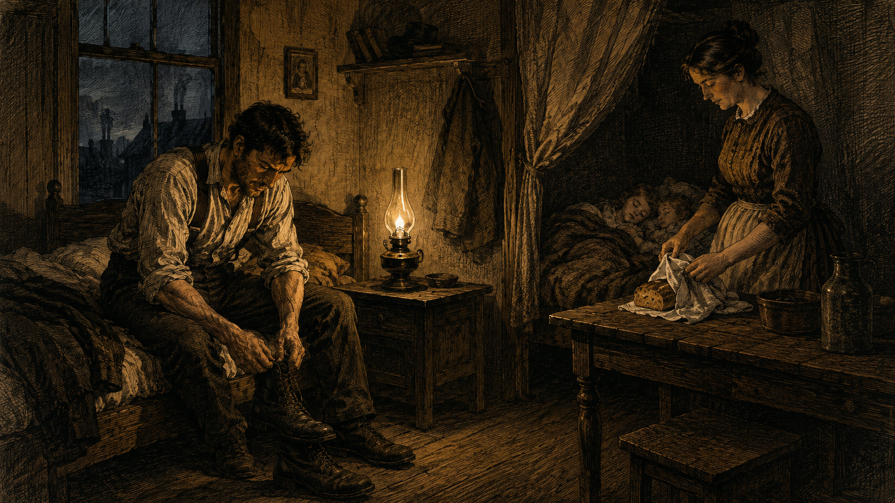
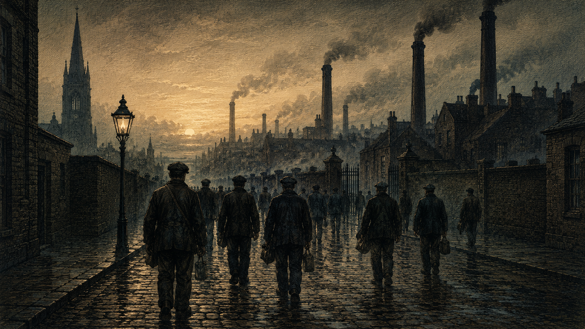
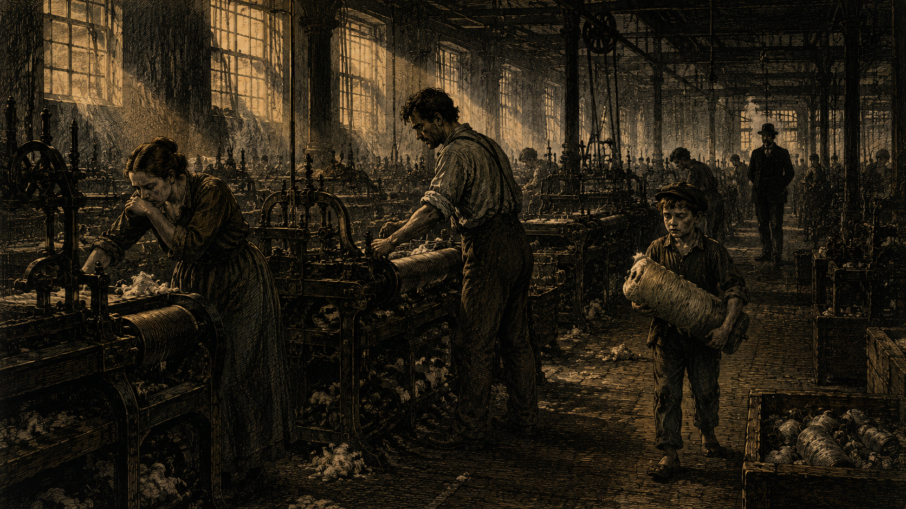
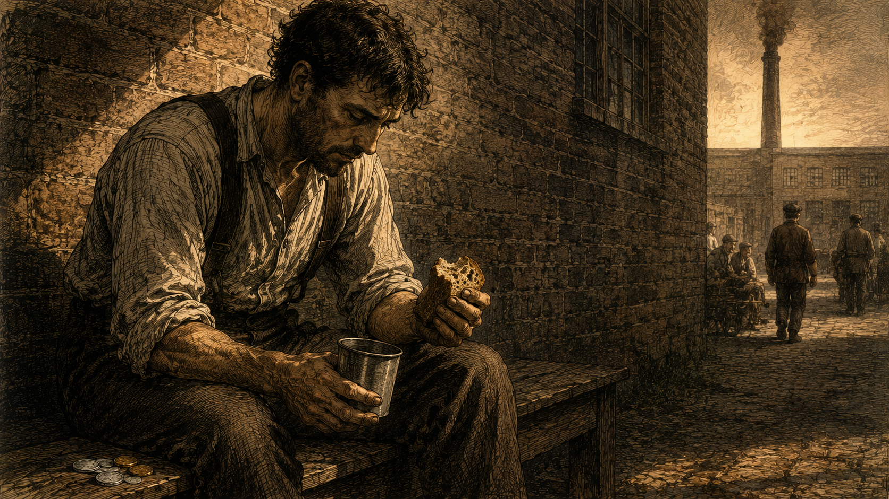
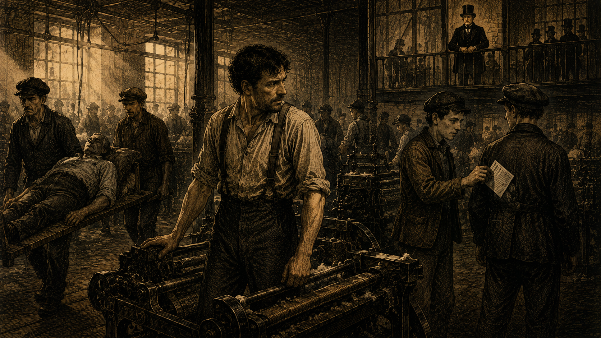
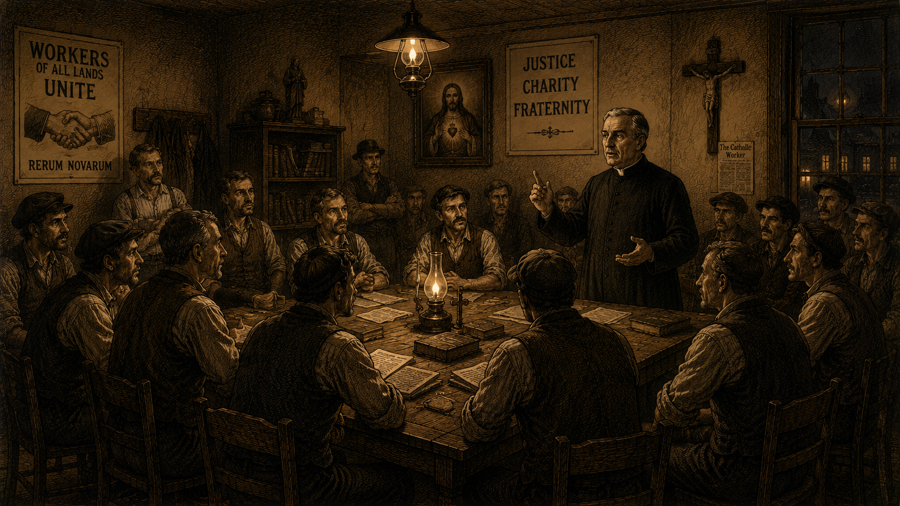
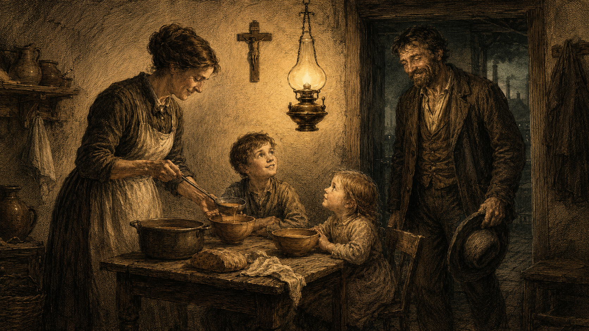
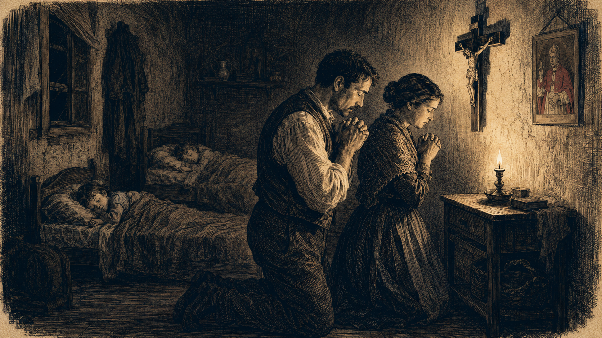

工業革命已經改變了人類的生活方式。蒸汽機與紡織廠取代了田園與作坊；少數人積聚了前所未見的財富，多數人卻在煤煙與機器的轟鳴中過著貧苦的生活。教宗良十三世開篇就指出了這個時代的「糾紛因素」——
古時工人的行會已經在前一世紀被毀滅了，卻並沒有旁的組織來替代它。工人階級被孤立無援的交付與鐵石心腸的僱主和貪得無厭的競爭。
少數個人擁有龐大的財產，大眾卻陷入前所未見的貧乏。契約勞動的習慣與行業集中於少數人之手，使勞苦大眾承受著「並不比奴隸制度好得了多少的桎梏」。
勞工階級自恃心理日益增大，社會主義者乘機鼓動工人毀滅私產、進行階級鬥爭。普遍的道德敗壞與宗教的被排斥，使整個社會陷入「可驚的嚴重性」之中。
通諭關懷的對象，不是抽象的「勞動」，而是有血有肉的工人。讓我們跟隨虛構的紡織廠工人阿福，走過1891年的一日——他的每一個時刻，都對應著通諭裡的一個訓導。

油燈昏暗。阿福披上工作服，妻子已起身為他切了一塊麵包。屋外尚未天亮，孩子們還在睡。他親吻妻子的額頭，提起工具箱出門。
通諭明確反對把工人視為「賺錢的牲口」。在天主眼中，勞苦並不可恥——基督自己就是一位木匠的兒子，並且以木匠的身分度過一生大部分歲月。
在天主看來，貧窮並不是一種羞辱，用自己的勞力來換取麵包，絕不是一件可恥的事。我們看到基督本身的情形，就更可以堅信這一點……他本來是天主的兒子，而且是天主本身，卻情願換一副樣子，讓人家把他當做一個木匠的兒子。 §20 「這不是一木匠嗎？」

石板路上濕氣未散，一群沉默的工人從各條巷弄匯入主街。遠方的煙囪已開始噴出黑煙。他想起祖父年輕時還在自己的小作坊織布，那時候每個工匠都屬於一個行會，有兄弟般的扶持——如今，這一切都不在了。
通諭開篇即指出，工業革命摧毀了中世紀的行會體系，卻沒有提供任何替代的組織。工人於是被孤立、無援，交給冷酷的市場競爭。
古時工人的行會，已經在前一世紀被毀滅了，卻並沒有旁的組織來替代它……因此就漸漸發生出這種現象：工人階級是被孤立無援的交付與鐵石心腸的僱主和貪得無厭的競爭了。 §2 現代工業的罪惡

紡織機沒命的轉。空氣中棉絮飛揚，工人連喘息都艱難。隔壁的女工咳嗽不止，但工頭一個眼色就讓她噤聲。再過去一些，七、八歲的童工搬運紗線，疲憊的眼神看著阿福。
通諭極嚴厲地譴責對工人體力的過度榨取，並特別關注礦工、女工、童工等弱勢勞動者，明確主張限制工時、禁止童工進廠。
用過度的勞動來把人們磨折著，以致僵化了他們的心靈，損壞了他們的身體，這不僅是不公道，而且是非人道的……日常勞動應該有一個調節，不能延長到體力所能允許的以上的時間去。 §33 勞動過度
至於說到兒童，我們應該極端留意著，在他們心身二者尚未充分成熟之前，千萬不要把他們放到作場和工廠去。因為，正如暴風雨的氣候會損壞春天的蓓蕾一樣，太早的人生困苦工作的經驗也會敗傷一個孩子的能力，打破他一切青春的希望。 §33 女工與童工

機器停了片刻。阿福坐在角落，從口袋掏出一塊乾麵包配水。他在心裡默默算：這個月的工資，付了租金、買了煤炭和米，還剩多少？孩子的鞋已經破了。妻子上週又咳嗽。如果工頭再壓低一點工資，這個家還能維持嗎？
這是通諭最具革命性的論點之一：工資雖由雙方協議決定，但有一條更高的自然律——報酬必須足夠養活工人及其家庭，過合理而節約的安適生活。否則，協議再「自由」也是不義。
照通列，工人和僱主可以作自由的協定，特別是對於工資可以作自由的協定；可是，有一條自然律卻比人與人之間的任何合約都更為重要，更為年代悠久，這條自然律便是，報酬必須能使工資獲得者足夠維持其合理而節約的安適生活。 §34 合法工資
如果為情勢所迫，或由於害怕更大的困難，工人因為僱主或包頭不肯多給，而祇好接受吃虧的條件，在這場合，他實成了強力或不公道之犧牲者。 §34 合法工資

機器又響起來。一個老工人滑了一跤，被抬出去——廠裡沒有任何補償。工頭的口袋裡夾著傳單：「奪回工廠！廢除私產！」另一邊，老闆視察時冷冷說了一句：「不滿意可以走，外頭多的是要工作的人。」一邊是社會主義的煽動，一邊是赤裸的剝削。哪一條才是出路？
通諭同時駁斥當時的兩種錯誤路線：社會主義的廢私產主張，與自由放任的資本主義。前者違反人性與自然律，後者忘記了人不是工具。
社會主義者既努力要把個人的所有物移轉於社會，他們實際上即損害了每一個工資勞動者的利益，因為他們剝奪了勞動者處理自己工資的自由，並因而破壞了勞動者增加其資產及改善其生活狀況的全部希望與可能。 §4 打擊勞工權利
為了個人的所得而對貧窮無助的人施行壓力，或是從別人的困乏中圖謀個人的厚利，卻是一件無論人的法律或神的法律都一律認為有罪的事。用欺詐手段來剝奪任何人所應得的工資，乃是一項天主必然會聽到而要忿怒且施以懲罰的罪行。 §17 公平工資

下工後，阿福不直接回家。他繞道去教堂旁的小會所——這是堂區的公教工人互助會。十幾個工友圍著一張長桌，討論本週的傷病補助；本堂神父在角落聆聽。這裡既不鼓吹革命，也不教人逆來順受，而是讓工人們在信仰中互相扶持。
通諭的解決方案中最具實踐力的部分：呼籲恢復工人團體，但這團體必須以信仰與美德為基礎，不只是經濟上的合作社，更是心靈上的兄弟共同體。
一個人既經驗到一己的薄弱無能，他就會設法從外界求得幫助……『兩個人合在一起，是比一個人單獨要好一些，因為他們有因聯合而發生的利益。』 §37 結社理由
加入一個「社會」，乃是人的自然權利，國家應該保護自然權利，決不能加以毀壞；如果國家禁止它的公民組織團體，它就跟它自身的存在原則相矛盾了。 §38 私人結社的天賦權

妻子端上一鍋熱湯。兩個孩子坐在小木桌兩側，眼神亮起來。阿福從口袋掏出今天的工錢——大部分交給妻子，剩下一小枚銅板放進床底的鐵盒。那是給孩子們將來的——也許將來他們能有自己的一小塊地、一個小作坊。
通諭把「私有財產」的根據建立在家庭責任上：父親有養家、傳承的義務，而要盡這個義務，就必須能擁有並傳承財產。家庭比國家更早存在，社會主義廢私產，等於毀滅家庭。
這是一條最神聖的自然律，父親應該供給他所生的子女以食物及一切必需品……做父親的要辦到這一點，除了倚仗有利益的財產的所有權之外，別無他法，他祇有把這分財產用繼承的方式轉渡給他的子女，才算盡了責任。 §10 家庭應得所有權
家庭既然無論在觀念上或事實上都早於人類之集合成公共社會，前者當然必須有先於後者的權利與義務，此種權利與義務實更直接的根據於自然。 §10 家庭權利先於國家

孩子們已睡熟。阿福與妻子跪在牆上的木十字架前，輕聲念天主經（主禱文）。一整天的辛勞、疲憊、屈辱、與一閃而過的甜蜜，都在這短短幾分鐘裡，被安放到一個更大的秩序之中。
通諭最深的一層論證：工人首先是有靈魂的人，是按天主肖像所造的。任何制度、契約、或工資談判，都不能侵犯這份神聖的尊嚴。
工人們有他們精神和心靈方面的利益。塵世的生活，無論它本身是如何的好，如何的要得。但總不是人之所以被創造的最後目的……倣傚著天主的形象而被創造出來的，乃是靈魂；人的無上權威亦是存在於這個靈魂之中。 §32 勞工最寶貴的資財
任何人如果侵犯了連天主也是那麼尊重的人格尊嚴，如果阻攔了別人去過作為天堂永恆生活之準備的高級生活，那就一定要受到責罰。 §32 勞工最寶貴的資財
隔日清晨。沒有機器的轟鳴，只有遠處堂區教堂的鐘聲。阿福一家穿上最整齊的衣裳，孩子們蹦跳著走在前頭。這一天，他不是某個工廠的編號，不是某張薪資單上的數字——他是一個天主的兒子，與整個堂區共同呼吸。
通諭主張主日休息不僅是宗教義務，更是工人應在法律上獲得保障的權利——這份權利根源於人對天主的關係，不容任何契約剝奪。
瞻禮日和某種節日有停止工作和勞動的責任。這種停工，我們不能僅僅認為是閒暇……這原是宗教所奉為神聖的停工。安息再加上宗教的儀節，就可以使人暫時忘記了日常生活的事務，把他的思想移轉到永恆的事物。 §32 休假與宗教實踐
在僱主與工人之間所訂立的一切契約之中，差不多總有這麼一個條件，或則明白說出，或則雙方默認著，這條件便是，應容許有靈魂和身體的正常休息。如果契約中有跟這不同的規定，那就違反正義和公道了。 §33 靈魂與身體的休息
這些句子，在頒布的135年後依然有力量——它們不只是給1891年的工人說的，也是給今日每一個工作者、僱主、與政府的。
《新事》通諭奠定了天主教社會訓導的核心詞彙——這些概念在後來的Quadragesimo Anno、Centesimus Annus等通諭中不斷展開，至今仍是教會社會教導的骨幹。
阿福的一天讀完了。但這份通諭的深度遠不止於此——以下三條路徑帶您走得更遠。